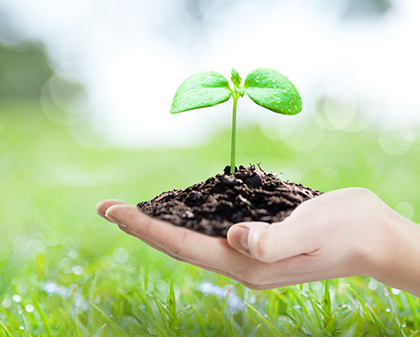
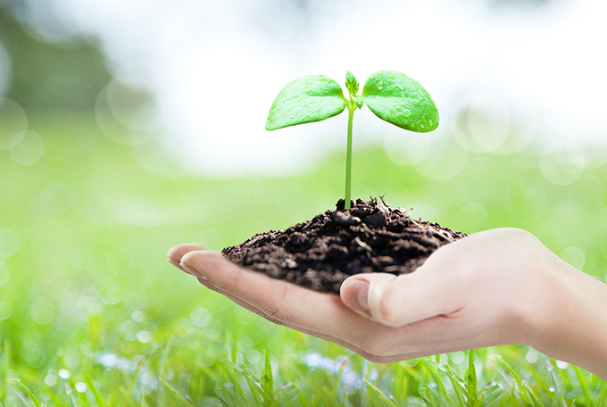
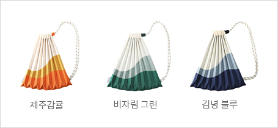
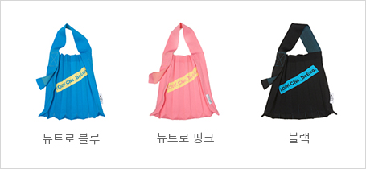

친환경 산업
- Home
- 투자환경
- 미래 유망산업
- 친환경 산업
친환경산업 (Eco-friendly Sector)


현대 우리 사회는 기후변화, 환경오염 등으로 인해 일상생활뿐만 아니라 기존의 산업구조와 기업경영 방식까지 바뀌고 있습니다.이에 따라 자원의 무분별한 낭비를 억제하고 친환경적인 제품을 소비하려는 윤리적인 소비자가 증가하고 있으며, 기업에게도 환경보호와 사회적 책임을 요구하는 시장의 목소리가 커지고 있습니다.
최근 제주에는 이러한 소비자의 요구를 받아들이고 윤리적인 소비 시장을 선점하기 위하여, 새로운 비즈니스 모델의 가능성에 도전하는 기업들이 늘어나고 있습니다. 기후변화 시대를 맞이하여 기업의 환경과 사회에 대한 책임은 지속가능경영을 위한 필수 조건이자 새로운 경쟁력이기 때문입니다.
세계자연유산 3관왕에 빛나는 제주의 청정 자연 브랜드와 아시아 시장에서의 높은 인지도는 환경 친화적이고 윤리적인 비즈니스를 지향하는 기업에게 최적의 투자처가 될 것입니다.
업사이클링 산업 (Upcycling Sector)
‘다시 태어나기 위한 되돌림’
제주의 자원순환 시스템 구축 프로젝트
제주의 자원순환 시스템 구축 프로젝트
500ml 삼다수페트병 16개로 친환경 가방을 만드는 플리츠마마
대한민국의 리사이클링 브랜드 플리츠마마는 효성, 제주도와 협력하여 대한민국 최초로 100% 제주 삼다수 폐페트병 재생원사를 활용한 제품을 판매하며 시장의 주목을 받고 있습니다.
‘다시 태어나기 위한 되돌림’은 제주지역의 자원순환 시스템(Recycle Eco-system)을 구축하기 위한 프로젝트로, 제주 삼다수의 버려지는 페트병을 수거해 리사이클 섬유 제조 기술을 확보하고 있는 효성티앤씨가 페트병을 재활용한 칩을 이용해 리사이클 섬유인 ‘리젠제주(regen®jeju)’를 제작하고, 친환경 가방 제조 스타트업인 플리츠마마㈜가 이 섬유로 최종 제품을 제작하여 판매를 합니다.
※ 리젠제주 : 국내 최초 100% 제주 폐페트병 리사이클 폴리에스터
※ 크레오라리젠 : 세계 최초 100% 리사이클 스판덱스
※ 크레오라리젠 : 세계 최초 100% 리사이클 스판덱스
-
럭색 / Rucksack
-
빅백 / Big Bag